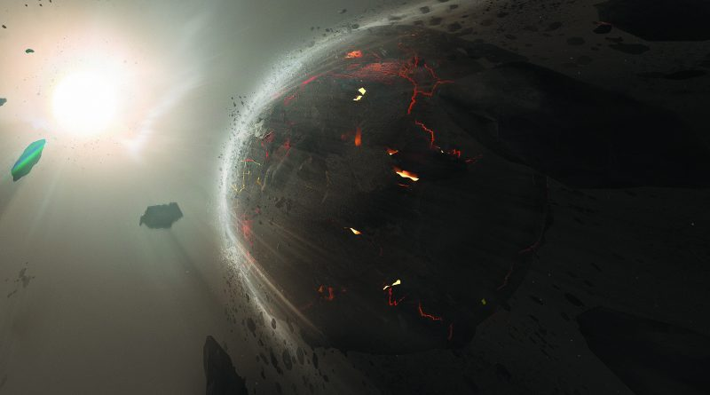

SYSTEM: CHRONOS

Excurs - System: Chronos
Das Chronos System befindet sich in den Außenbereichen des UEE und wurde durch staatliche Geheimhaltung und politische Kontroversen seit seiner Entdeckung im Jahr 2863 verschleiert. Offizielle Regierungsdokumente listen die 18. Kampfflotte der Navy, die zu der Zeit noch im Kellog System stationiert war als die Ersten, die nach Chronos reisten, nachdem sie während eines RoutineScans den Sprungpunkt entdeckt hatten.
Allerdings hatte dies aufgrund eines aktuellen Rechtsstreits offenbar keine Bedeutung. In dem Rechtsstreit Contraly gegen das UEE liegt ein Gegenanspruch vor, der besagt, dass es Contralys Urgroßvater war, der das System entdeckt hatte. Ihm wurde jedoch die rechtmäßige Anerkennung aufgrund von Komplikationen mit einem ausstehenden Haftbefehl wegen dem Wildern von Orms auf Xis aberkannt. Historiker haben sich auf beiden Seiten der Debatte eingeschaltet und nun liegt es in den Händen des Gerichts, eine Entscheidung zu treffen. So oder so aber setzte sich das System zur Zeit der Entdeckung lediglich aus einem G-Typ Hauptreihenstern sowie zwei unbewohnbaren Planeten, die sich nah um die Sonne drängen zusammen. Aufgrund seiner Abgeschiedenheit, fehlenden Ressourcen und fehlenden bewohnbaren Stellen dachten nur wenige, dass das UEE Interesse an diesem System zeigen würden.
Aus diesem Grund waren die Beobachter entrüstet, als das UEE Chronos plötzlich für die reine Regierungsnutzung und -entwicklung beanspruchte. Als die militärischen Schiffe begannen, das leere System immer wieder anzufliegen, kamen neugierige Fragen aus der Öffentlichkeit darüber auf, was wirklich in Chronos vor sich ging. Über Jahre hinweg kursierten teilweise einfallslose („Doomsday Vorrichtung“), teilweise einfallsreiche („unsichtbare Raumstationen“) Theorien im UEE-Raum. Eine leidenschaftliche Verschwörungstheoretikerin ging angeblich sogar so weit, als blinder Passagier auf einem militärischen Transporter zu reisen, der auf dem Weg zu dem System war. Als sie später behauptete, dass dort nichts versteckt werde, verärgerte ihre Unfähigkeit, irgendetwas Skandalöses aufzudecken, ihre Theoretikerkollegen und befeuerte damit nur weiter die Spekulationen.
Es wurde behauptet, dass die einzige Möglichkeit, dass sie absolut gar nichts gefunden hatte, die ist, dass es wirklicht etwas zu verheimlichen galt und die Regierung wieder einmal die Wahrheit zum Schweigen brachte. Diejenigen, die an eine Vertuschung glaubten, waren sich sogar noch sicherer, dass es einen Grund für das UEE geben musste, dass es Chronos für sich selbst beanspruchte. Es dauerte bis zum Jahr 2872, dass Imperator Corbyn Salehi hervortrat, um offiziell zu verkünden, woran die Regierung arbeitete. Chronos sollte die Heimat für das Projekt Archangel werden, gemeinhin auch als „Synthworld“ bezeichnet, einer gewaltigen UEE-Initiative, um einen Planeten zu bauen. Nach Jahrhunderten des „Umschreibens“ von Planeten durch die Terraforming-Technologie, visierte die Menschheit nun die Erschaffung eines ganzen Planeten an.
Durch das Fehlen weiterer Planeten konnte die Synthworld zudem in einer idealen orbitalen Distanz zum Hauptstern platziert werden. Zusätzlich bot es den Vorteil, ein relativ abgelegenes System zu sein, wodurch das Risiko von unerwünschten Besuchern und neugierigen Blicken minimiert wurde. Nachdem das Projekt bekannt gegeben wurde, symbolisierte es eine Zukunft, in der die Menschheit bewohnbare Welten erschaffen konnte, ohne das Risiko einzugehen, anderen Spezies zu schaden. Frachter nahmen die lange Reise auf sich, um Ressourcen in das System zu schaffen, auch wenn die Marge anderswo höher war. Gelehrte erklärten ausführlich, was ein Erfolg von Archangel für die Zukunft des Empires bedeuten würde. Und Zivilisten warteten gespannt auf die Entstehung einer neuen Welt.
Im Jahre 2635 änderte sich die Situation während der Regierungszeit von Livia Messer III. Sie schlug eine Umstrukturierung des Rechtssystems des UEE vor, die den Aufbau eines massiven Hochsicherheitsgefängnisses in Dellins riesiger Wüste beinhaltete. Das Projekt hat die Wirtschaft angekurbelt und neue Leute und Credits eingebracht. Als ihr Bruder Corsen Messer V. an die Macht kam, baute er mehrere weitere Anlagen. Im Jahre 2670 wurde der Planet im Senat durch ein Dekret von Corsen anerkannt. Viele der heutigen Historiker gehen inzwischen davon aus, dass es sich um ein “Quid pro Quo” zwischen Corsen Messer und Gwen Czukay handelte, die Vertreterin des Gouverneursrates von Dellin und kurz darauf die erste Senatorin des Planeten war. Als Senatorin Czukay vereidigt wurde, beschloss sie persönlich, dass der Planet unter dem Namen Haros anerkannt werden sollte.
Als der Planet 2795 beschloss, im Senat auf seine Anerkennung zu verzichten, wurde Haros als offizieller Name des Planeten gestrichen, da viele Einheimische ihn weiterhin mit der Messer-Ära in Verbindung brachten. Einige Jahre lang hatte der Planet mit politischen Unruhen zu kämpfen, lebte aber in Frieden. Dann destabilisierte eine schreckliche Dürre 2811 Dellin und löste gewalttätige Aufstände aus. Der Nachbarstaat Acheron, der mit der Dürre selbst zu kämpfen hatte, konnte nicht viel Hilfe leisten und war von verzweifelten Flüchtlingen aus Dellin überwältigt. Der erste Bürgerkrieg brach 2813 zwischen den beiden Staaten aus und dauerte bis 2819. Der Krieg endete nie offiziell, da die Gegner sich lediglich auf einen längeren Waffenstillstand einigten. Seitdem sind zwar Spannungen aufgetreten, aber nicht alle Hoffnung ist verloren. Vor kurzem brachte ein Erdbeben von 2934, das Acheron verwüstete, einen Großteil der Menschen des Planeten zusammen, um die vom Erdbeben heimgesuchte Bevölkerung von Acheron zu entlasten. Während des Umbaus wurde in Acherons Hauptstadt der Phiyl Tower errichtet. Als Meisterwerk der supermodernen Architektur gedacht, sollte es eine neue, hoffnungsvollere Ära für Charon III symbolisieren. Leider dauerte der Frieden nicht lange, da die Bewohner von Dellin offen darüber spekulierten, warum Acheron ihre Hilfe brauchte und doch die Mittel besaßen, um einen solchen Turm zu bauen.
Im Jahre 2944 brach der jüngste Krieg zwischen den Staaten Acheron und Dellin aus, nachdem Tarquin Klast zum Gouverneur von Dellin gewählt worden war. Acheron hatte seinen politischen Rivalen unterstützt und behauptete, Klast habe Einschüchterungstaktiken benutzt, um die Stimmen zu seinen Gunsten zu beeinflussen. Als Klast einschneidende Änderungen an der Regierung einleitete und die Kontrollmechanismen beseitigte, die seine Macht einschränkten, griff Acheron ein, um das zu stoppen, was sie als wachsende Tyrannei bezeichneten. Nach mehreren Scharmützeln hat das UEE Waffenstillstandsgespräche zwischen den beiden Staaten aufgenommen, aber es konnte keine Einigung erzielt werden. Heute wütet noch immer der Bürgerkrieg. UEE Navy Schiffe beobachten nur von oberhalb der Atmosphäre, um sicherzustellen, dass keine groben Verstöße gegen die geltenden Gesetze vorliegen. Während Experten darüber diskutieren, wie sehr das UEE involviert sein sollte, scheint ein Großteil der Bevölkerung des Imperiums zwiespältig auf den Konflikt zu reagieren.

“Aufruhr und Ärger, gib uns das Doppelte, denn dieser endlose Kampf ist es, was uns ausmacht.” – Gasper Khan, Text von Halcyon Home, 2912
Allerdings hatte dies aufgrund eines aktuellen Rechtsstreits offenbar keine Bedeutung. In dem Rechtsstreit Contraly gegen das UEE liegt ein Gegenanspruch vor, der besagt, dass es Contralys Urgroßvater war, der das System entdeckt hatte. Ihm wurde jedoch die rechtmäßige Anerkennung aufgrund von Komplikationen mit einem ausstehenden Haftbefehl wegen dem Wildern von Orms auf Xis aberkannt. Historiker haben sich auf beiden Seiten der Debatte eingeschaltet und nun liegt es in den Händen des Gerichts, eine Entscheidung zu treffen. So oder so aber setzte sich das System zur Zeit der Entdeckung lediglich aus einem G-Typ Hauptreihenstern sowie zwei unbewohnbaren Planeten, die sich nah um die Sonne drängen zusammen. Aufgrund seiner Abgeschiedenheit, fehlenden Ressourcen und fehlenden bewohnbaren Stellen dachten nur wenige, dass das UEE Interesse an diesem System zeigen würden.
Aus diesem Grund waren die Beobachter entrüstet, als das UEE Chronos plötzlich für die reine Regierungsnutzung und -entwicklung beanspruchte. Als die militärischen Schiffe begannen, das leere System immer wieder anzufliegen, kamen neugierige Fragen aus der Öffentlichkeit darüber auf, was wirklich in Chronos vor sich ging. Über Jahre hinweg kursierten teilweise einfallslose („Doomsday Vorrichtung“), teilweise einfallsreiche („unsichtbare Raumstationen“) Theorien im UEE-Raum. Eine leidenschaftliche Verschwörungstheoretikerin ging angeblich sogar so weit, als blinder Passagier auf einem militärischen Transporter zu reisen, der auf dem Weg zu dem System war. Als sie später behauptete, dass dort nichts versteckt werde, verärgerte ihre Unfähigkeit, irgendetwas Skandalöses aufzudecken, ihre Theoretikerkollegen und befeuerte damit nur weiter die Spekulationen.
Es wurde behauptet, dass die einzige Möglichkeit, dass sie absolut gar nichts gefunden hatte, die ist, dass es wirklicht etwas zu verheimlichen galt und die Regierung wieder einmal die Wahrheit zum Schweigen brachte. Diejenigen, die an eine Vertuschung glaubten, waren sich sogar noch sicherer, dass es einen Grund für das UEE geben musste, dass es Chronos für sich selbst beanspruchte. Es dauerte bis zum Jahr 2872, dass Imperator Corbyn Salehi hervortrat, um offiziell zu verkünden, woran die Regierung arbeitete. Chronos sollte die Heimat für das Projekt Archangel werden, gemeinhin auch als „Synthworld“ bezeichnet, einer gewaltigen UEE-Initiative, um einen Planeten zu bauen. Nach Jahrhunderten des „Umschreibens“ von Planeten durch die Terraforming-Technologie, visierte die Menschheit nun die Erschaffung eines ganzen Planeten an.
Das Projekt Archangel (Erzengel)
Es gab viele Gründe, warum sich das Chronos System als idealer Ort für dieses ambitionierte Projekt eignete. Der Hauptstern hatte Ähnlichkeit zur Sonne im Sol System, wodurch es optimale Bedingungen für menschliche Siedlungen bot. Seine zwei Planeten waren trostlose Gesteinsbrocken, das bedeutete, dass dieses gewaltige Unterfangen keine Nachteile für irgendwelche Bewohner haben würde – weder durch die jahrzehntelange Konstruktionsphase noch durch weiter führende Experimente.Durch das Fehlen weiterer Planeten konnte die Synthworld zudem in einer idealen orbitalen Distanz zum Hauptstern platziert werden. Zusätzlich bot es den Vorteil, ein relativ abgelegenes System zu sein, wodurch das Risiko von unerwünschten Besuchern und neugierigen Blicken minimiert wurde. Nachdem das Projekt bekannt gegeben wurde, symbolisierte es eine Zukunft, in der die Menschheit bewohnbare Welten erschaffen konnte, ohne das Risiko einzugehen, anderen Spezies zu schaden. Frachter nahmen die lange Reise auf sich, um Ressourcen in das System zu schaffen, auch wenn die Marge anderswo höher war. Gelehrte erklärten ausführlich, was ein Erfolg von Archangel für die Zukunft des Empires bedeuten würde. Und Zivilisten warteten gespannt auf die Entstehung einer neuen Welt.
Charon I
Doch während die Dekaden vorbei zogen, schien das Interesse am Versprechen einer synthetischen Welt bei der Öffentlichkeit abzuflauen. Trotz Millionen investierter Stunden und Millairden Credits schien der Planet seiner Fertigstellung nicht näher zu kommen. Von Korruptionsskandalen und Kostenüberschreitungen in den Dreck gezogen wurde das Projekt von einigen FortschrittsTraditionalisten als „finanzieller Vampir“ bezeichnet, das Geld und Ressourcen von anderen wichtigen Projekten absaugte. Bald symbolisierte die Synthworld nicht länger die Zukunft. Heute gibt es in Chronos nur noch sehr wenig Verkehr. Frachter laden noch immer Vorräte an der Archangel- Station ab und einige reisen an den vorgegebenen Routen durch das System, um in das Branaugh System zu springen. Daneben gibt es nur noch wenig weitere Gründe, sich lange im Chronos System aufzuhalten.Charon II
Charon II ist ein Smogplanet mit einer dichten Schicht aus Kohlendioxid, die die Wärme in der Atmosphäre gefangen hält. Durch den Treibhauseffekt wird die Erdoberfläche unwirtlich warm. Die Schwierigkeiten, mit Terraforming eine solch feindliche Welt zu bearbeiten und das schwierige politische Klima im gesamten System haben jeden Versuch, den komplizierten Prozess zu initiieren, zu einem Reinfall gemacht.Charon III
Die UPE forderte dieses System wegen Charon III. Der Planet war schnell terrageformt, aber wenige Kolonisten waren willig, in solch einer entfernten Ecke des Reiches zu leben. Es fehlten bedeutende Vorkommen an seltenen Mineralien, um Bergleute anzuziehen, und obwohl Grundstücke billig waren, wurden nur wenige Fabriken gebaut, da die zusätzlichen Transportkosten für die meisten Hersteller nicht durch die lokalen Einsparungen kompensiert werden konnten. Die von der Isolation angezogenen Bewohner strömten über Jahrzehnte hinweg immer weiter ein, obwohl sie oft auf Bodenanreicherungsprodukte wie Moly-Nitronese angewiesen waren, um zuverlässig Nahrung anzubauen.Im Jahre 2635 änderte sich die Situation während der Regierungszeit von Livia Messer III. Sie schlug eine Umstrukturierung des Rechtssystems des UEE vor, die den Aufbau eines massiven Hochsicherheitsgefängnisses in Dellins riesiger Wüste beinhaltete. Das Projekt hat die Wirtschaft angekurbelt und neue Leute und Credits eingebracht. Als ihr Bruder Corsen Messer V. an die Macht kam, baute er mehrere weitere Anlagen. Im Jahre 2670 wurde der Planet im Senat durch ein Dekret von Corsen anerkannt. Viele der heutigen Historiker gehen inzwischen davon aus, dass es sich um ein “Quid pro Quo” zwischen Corsen Messer und Gwen Czukay handelte, die Vertreterin des Gouverneursrates von Dellin und kurz darauf die erste Senatorin des Planeten war. Als Senatorin Czukay vereidigt wurde, beschloss sie persönlich, dass der Planet unter dem Namen Haros anerkannt werden sollte.
Als der Planet 2795 beschloss, im Senat auf seine Anerkennung zu verzichten, wurde Haros als offizieller Name des Planeten gestrichen, da viele Einheimische ihn weiterhin mit der Messer-Ära in Verbindung brachten. Einige Jahre lang hatte der Planet mit politischen Unruhen zu kämpfen, lebte aber in Frieden. Dann destabilisierte eine schreckliche Dürre 2811 Dellin und löste gewalttätige Aufstände aus. Der Nachbarstaat Acheron, der mit der Dürre selbst zu kämpfen hatte, konnte nicht viel Hilfe leisten und war von verzweifelten Flüchtlingen aus Dellin überwältigt. Der erste Bürgerkrieg brach 2813 zwischen den beiden Staaten aus und dauerte bis 2819. Der Krieg endete nie offiziell, da die Gegner sich lediglich auf einen längeren Waffenstillstand einigten. Seitdem sind zwar Spannungen aufgetreten, aber nicht alle Hoffnung ist verloren. Vor kurzem brachte ein Erdbeben von 2934, das Acheron verwüstete, einen Großteil der Menschen des Planeten zusammen, um die vom Erdbeben heimgesuchte Bevölkerung von Acheron zu entlasten. Während des Umbaus wurde in Acherons Hauptstadt der Phiyl Tower errichtet. Als Meisterwerk der supermodernen Architektur gedacht, sollte es eine neue, hoffnungsvollere Ära für Charon III symbolisieren. Leider dauerte der Frieden nicht lange, da die Bewohner von Dellin offen darüber spekulierten, warum Acheron ihre Hilfe brauchte und doch die Mittel besaßen, um einen solchen Turm zu bauen.
Im Jahre 2944 brach der jüngste Krieg zwischen den Staaten Acheron und Dellin aus, nachdem Tarquin Klast zum Gouverneur von Dellin gewählt worden war. Acheron hatte seinen politischen Rivalen unterstützt und behauptete, Klast habe Einschüchterungstaktiken benutzt, um die Stimmen zu seinen Gunsten zu beeinflussen. Als Klast einschneidende Änderungen an der Regierung einleitete und die Kontrollmechanismen beseitigte, die seine Macht einschränkten, griff Acheron ein, um das zu stoppen, was sie als wachsende Tyrannei bezeichneten. Nach mehreren Scharmützeln hat das UEE Waffenstillstandsgespräche zwischen den beiden Staaten aufgenommen, aber es konnte keine Einigung erzielt werden. Heute wütet noch immer der Bürgerkrieg. UEE Navy Schiffe beobachten nur von oberhalb der Atmosphäre, um sicherzustellen, dass keine groben Verstöße gegen die geltenden Gesetze vorliegen. Während Experten darüber diskutieren, wie sehr das UEE involviert sein sollte, scheint ein Großteil der Bevölkerung des Imperiums zwiespältig auf den Konflikt zu reagieren.
Charon IV
Als Max Keaton das System entdeckte, wurde er vom Eisriesen Charon IV gefangen genommen. Die wunderschöne, blaue, tote Welt inspirierte Keaton dazu, das System Charon zu nennen, ein Geständnis sowohl an den mythologischen Charakter als auch an Keatons Großvater, der ein beliebter Klassik-Professor in Rhetorik war.Charon V
Alle paar Jahrzehnte scannt und untersucht ein weiteres Upstart-Bergbauunternehmen den entfernten Zwergplaneten in der Hoffnung, wertvolle Mineralien zu finden, die andere übersehen haben. Bisher wurden keine gefunden.
Reisewarnung
Wegen des Bürgerkriegs hat das Acheron-Militär alle Versorgungsschiffe, die für Dellin bestimmt sind, auch jene, die von freiberuflichen Spediteuren betrieben werden, zu feindlichen Kämpfern erklärt. Wir empfehlen, dass kein Schiff in die Atmosphäre der Charon III eindringt, es sei denn, es ist absolut notwendig.Ein Flüstern im Wind
“Schwermütig stehe ich heute hier, um Haros’ Anerkennung im UEE-Senat zu widersprechen. Von hier an wird der Planet seinen Senatsitz samt aller damit verbundenen Verantwortlichkeiten und Vorteile abgeben. Ich bin mit dieser Entscheidung zwar absolut nicht einverstanden, aber sie ist der Wille des Volkes, und ich werde sie respektieren. Ich fürchte, nicht jeder auf Haros wird so gnädig sein, wenn er besiegt wird.” – Bernard Ma, Vertreter des Gouverneursrates von Dellin, in einer Rede vor dem Senat, 2795“Aufruhr und Ärger, gib uns das Doppelte, denn dieser endlose Kampf ist es, was uns ausmacht.” – Gasper Khan, Text von Halcyon Home, 2912